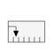
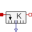
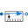
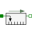
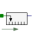

RectangularSensorIcon representing a linear measurement device |

|
Information
This information is part of the Modelica Standard Library maintained by the Modelica Association.
This icon is designed for a translational sensor model.
Extended by (5)
|  |
Modelica.Thermal.HeatTransfer.Sensors Relative temperature sensor |
|  |
Modelica.Fluid.Sensors.BaseClasses Partial component to model a sensor that measures the difference between two potential variables |
|  |
Modelica.Mechanics.Translational.Interfaces Device to measure a single relative variable between two flanges |
|  |
Modelica.Mechanics.Translational.Interfaces Device to measure a single absolute flange variable |
|
Modelica.Mechanics.MultiBody.Sensors Measure the distance between the origins of two frame connectors |